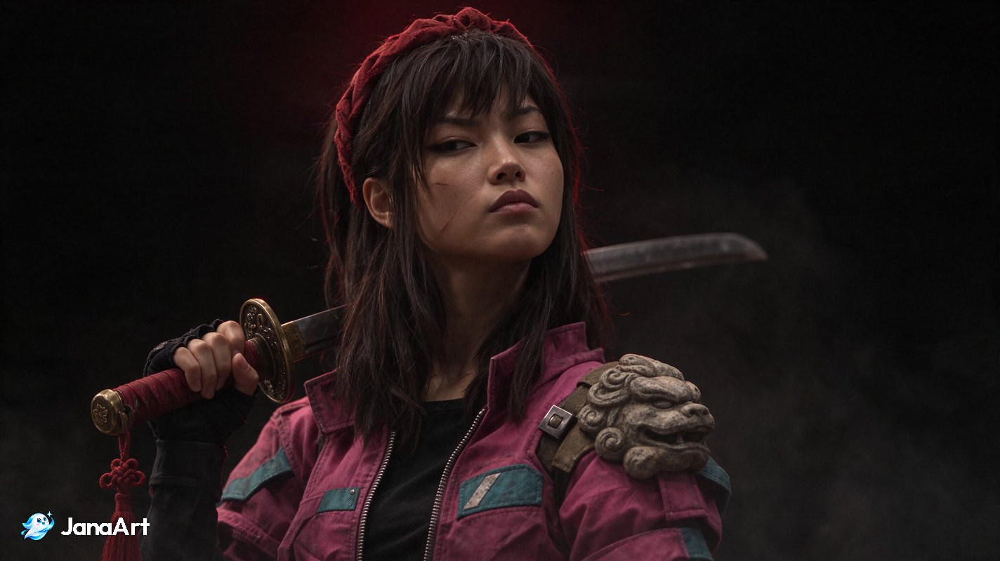
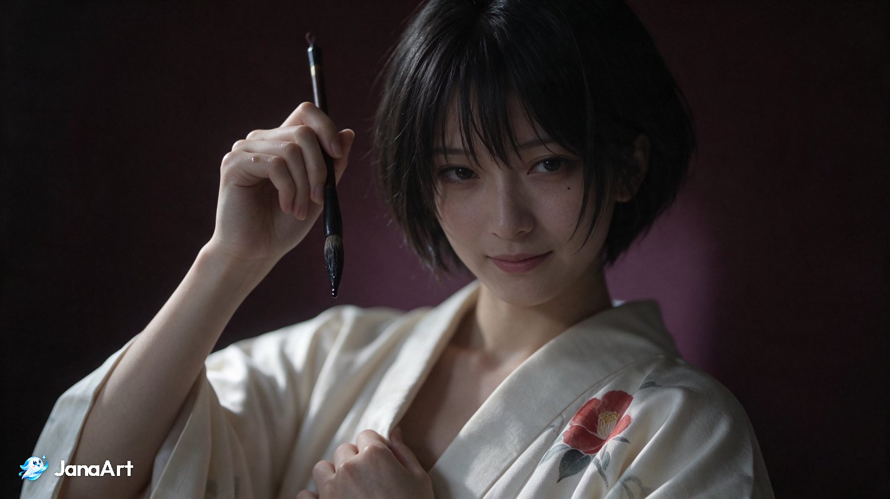
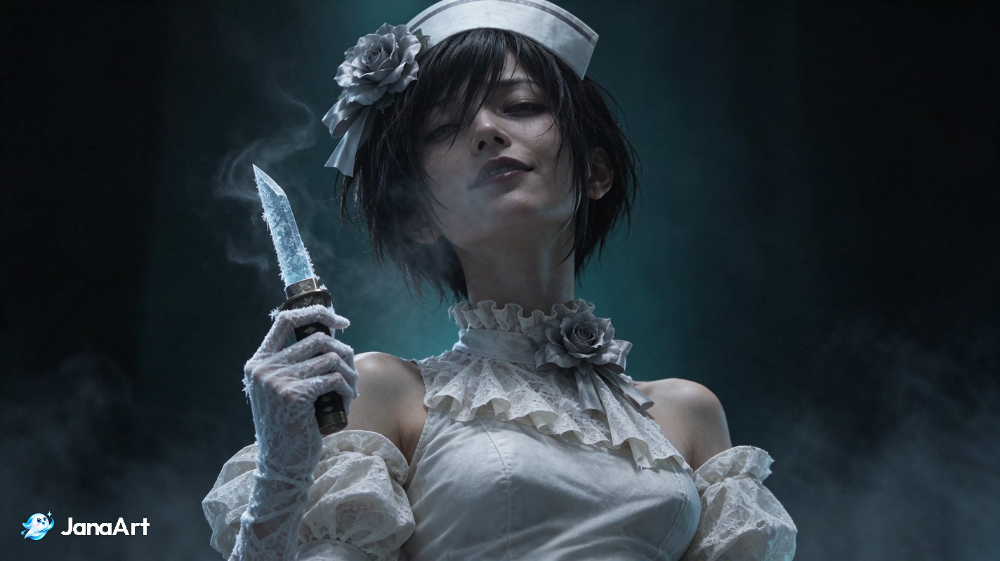
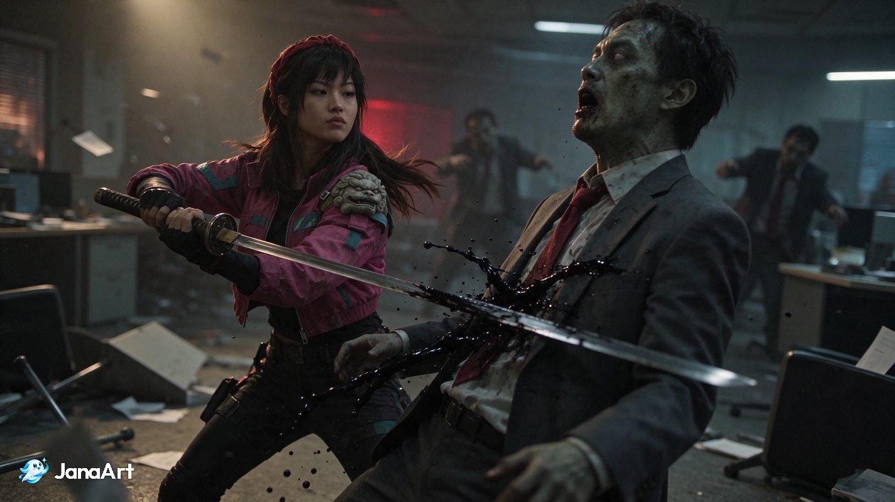

The cast, photographed
For the end credits we want the people of the tower as if they were real. Four portraits have been turned into photographs, plus one of Rin mid-cut.
The game's portraits are ink drawings. For the end credits we wanted something else: the cast as if a film had been made, and these were its stills.


How they were made
Each photograph starts from the character's ink portrait as a reference image, plus a written prompt, run through Seedream on JanaArt.
The prompts were written as one set so the pictures belong together on a credits screen: the same 85mm lens, the same low-key studio light, a dark backdrop with a little mist, and one colour of rim light per character. Red for Rin. Plum for Hana. The blade itself for Homura. Cold teal for the Widow.
Each prompt names the things that must survive from the drawing: Rin's braided red headband, fuchsia jacket and stone lion-dog on her shoulder; Hana's blunt bob, the camellia on her robe and the brush in her hand.





Rin at work
One more, in motion: Rin mid-cut on an office floor. Her sword bleeds ink when it cuts the undying, so that is what flies: black ink, not blood.


What comes next
The Maintenance Chief is the fifth in the set and has not been made yet. The plan is to use these behind the end credits.